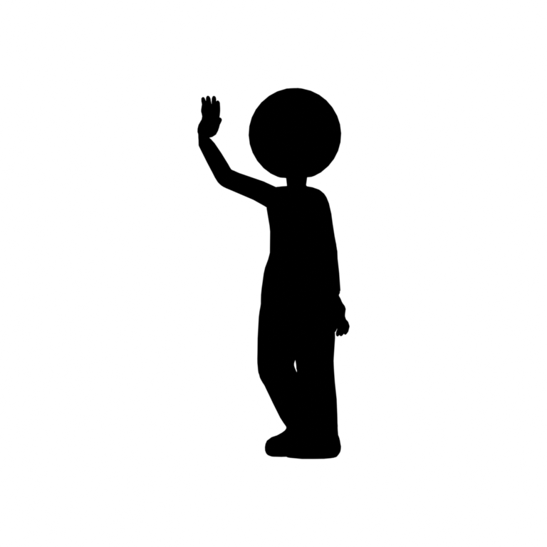
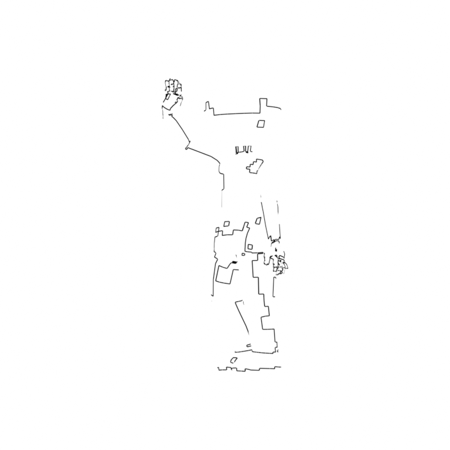
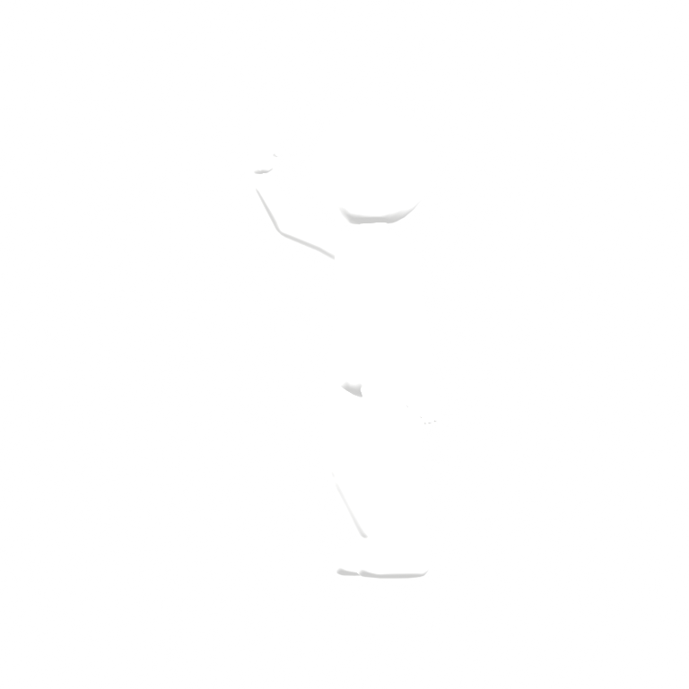
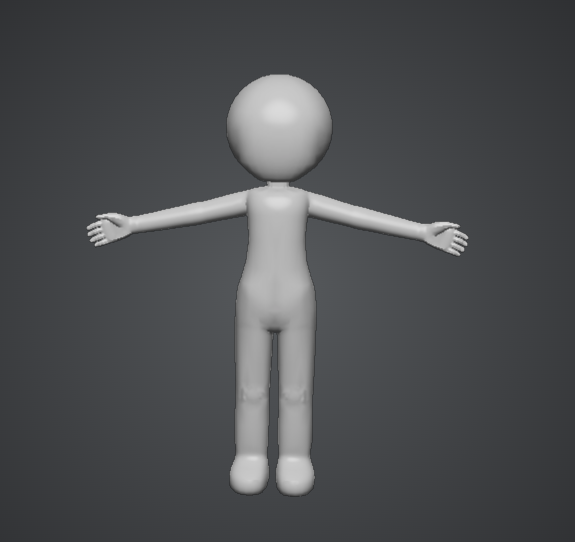
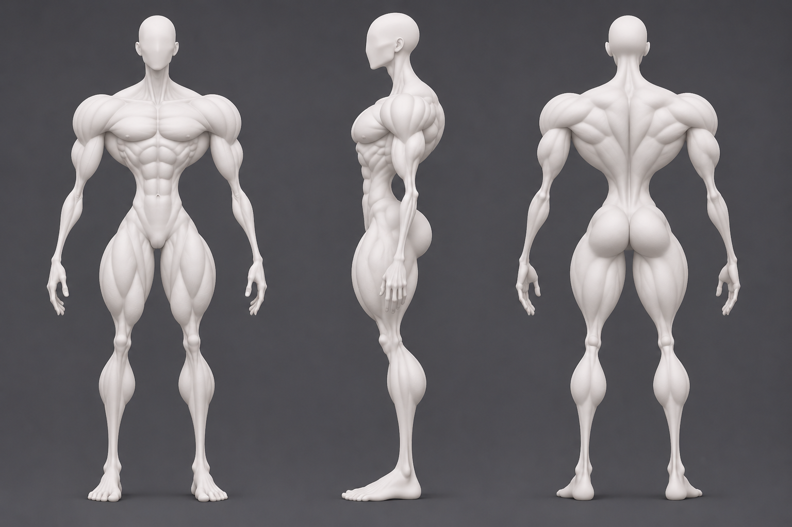

박항아의 준비와 결정은 HA, AI 어시스턴트 이제의 제안·출력·수정은 LTJ로 구분합니다. AI가 잘못 만든 코드를 작가의 모델링 실수로 바꾸어 적지 않습니다. 다른 참여자는 이름과 역할이 확인되면 소개합니다. 이 글들은 경험을 정리한 기록이지 모두 본인이 직접 쓴 원문은 아닙니다.
기본 모습은 쓸 수 있지만 움직일 때 형태가 찌그러지는 문제가 남았습니다. 작가는 손과 관절의 수정을 기다리는 동안 선·도형·입체 자료를 먼저 만들기로 했습니다. 이때 정지 도형은 실루엣, 외곽선, 해칭, 3D의 네 표현을 시험했습니다. 이후 인체 자료의 네 표현과 혼동하지 않습니다.
모양뿐 아니라 위치와 배열, 카메라 각도와 구도, 도형 개수까지 기록합니다. 작가가 손으로 만든 해칭 무늬도 쓰면서 자연스러움과 형태가 잘 보이는지를 함께 봅니다.
AI가 배치한 뼈대와 자동 가중치만으로는 자연스러운 손을 만들지 못했습니다. 가중치는 각 뼈가 표면을 얼마나 움직일지 정하는 값입니다. 작가는 손가락이 파이프처럼 휘거나 마디 길이가 어색하고 엄지 접촉이 이상하다고 지적했습니다. 관절 위치, 길이, 표면 모양, 움직임 값을 나누어 다시 봅니다.
해칭은 선을 여러 개 그어 명암을 나타내는 방식입니다. 정지 화면은 괜찮아도 팔꿈치를 굽히면 선 간격과 두께가 함께 늘어났습니다. 화면에 고정한 무늬와 몸 표면에 붙인 무늬를 비교하고 자세마다 표면 좌표를 조정하는 시험을 했습니다. 손가락에 무늬가 남은 문제도 수정 중이었습니다. 일부 개선이 모든 자세의 완성은 아닙니다.
2026년 11월 15일의 홍보 방향입니다. 한 장에 두 인물과 학습 방법, 작품 의도를 모두 넣으니 복잡했습니다. 작가는 “이 캐릭터가 AI를 거치면 어떻게 될까?”라는 궁금증을 남기고 공통 배치는 유지한 채 인물별로 소개하기로 했습니다.
티저, Tiny 커버, Luxy 커버, 두 인물이 함께하는 메인 포스터의 네 유형입니다. 옛 비하인드에 Ruxy로 쓰였으나 이후 Luxy로 바로잡았습니다. 어느 인물을 먼저 보여 줄지, 게시 날짜는 아직 정하지 않았습니다.
티저는 글자나 중간보고회 이미지를 활용하는 방안을 검토합니다. 발표 전에는 작가의 펜 그림을 보여 주고 AI를 거친 변화는 발표 때 공개할 방향입니다. 큰 제목, 밝은 격자 바탕, 선과 강조색은 검토 중이며 최종 색·글꼴·인쇄 방식은 아직 아닙니다.
일러스트, 배치, 문구 길이, 순서와 날짜, 행사 표기를 더 정해야 합니다. 디자인 협의 캡처에서 사적 대화와 프로필 사진은 공개하지 않았고 다른 사람의 제안을 작가 혼자 이룬 성과로 바꾸지도 않았습니다.
작가가 직접 만든 인체로 AI의 그림 출력 코드를 시험했습니다. 실루엣은 읽혔지만 외곽선은 머리가 빠지고 사각형 조각선이 남았습니다. 회색 입체는 밝은 부분이 배경에 묻혔습니다. 작가는 실루엣 외의 표현을 고쳐 달라고 했습니다.
v0.3.1 수정안은 눈에 보이는 윤곽 위주로 선을 뽑고 무광 재질, 조명, 색, 밝기를 조정하며 만화 명암을 따로 출력하는 방향이었습니다. 먼저 정면 한 방향의 네 표현을 비교하고 옛 결과를 덮어쓰지 않기로 했습니다.
실제 JSON에는 Standard 색 설정·노출 0·SUN 조명 2개가 적혀 있습니다. 앞서 제안한 AgX·노출 -0.55·SUN 3개와 달랐습니다. 제안한 코드와 실제 기록을 구분하므로 개선 원인을 특정 코드 한 줄로 단정하지 않습니다.
외곽선은 머리와 몸이 이어지고 조각선이 줄었습니다. 목 주변 겹친 선과 작은 잔선은 남아 축소해서 다시 봐야 합니다. 회색 입체도 볼륨과 경계가 나아졌지만 밝고 대비가 약합니다.
카툰 명암은 파일은 나왔지만 너무 옅어 목표인 2~3단계 명암에 못 미쳤습니다. 실루엣은 검정 형태를 유지하지만 겹친 손·다리 내부를 구분하지 않는 표현입니다. 다른 자세까지 통과한 것은 아닙니다.
PNG 4장과 JSON 4개를 확인했습니다. 모두 86번 프레임·정면·같은 출력 묶음으로 적혀 있지만, 카메라 위치는 (0, 0, 0), 변환 기록은 기본값인 항등행렬, X 회전은 약 90도였습니다. 이 값이 실제 카메라와 맞는지 확인해야 합니다.
검수 상태는 모두 unreviewed, 즉 아직 검토 전이며 체형과 포즈 이름도 임시값이 남았습니다. 그림이 있다는 것과 다시 똑같이 만들 수 있는 학습 자료가 된 것은 다릅니다. 다음 작업은 카툰 명암·입체 대비·외곽선 개선, 카메라 기록 수정, 그림과 JSON의 짝 확인입니다. 이후 안내선과 인체 도형화, 동작 선, 다른 시점으로 넓힙니다.
상상과 최종 판단은 작가가 맡고 이제에게 지식 정리, 계획, 코드와 문서 초안을 맡깁니다. 큰 질문을 자료·코드·이야기·웹의 작은 작업으로 나눕니다.
이야기, 세계관, 그림 지시문, 웹 구현, 화면 디자인, 학습 자료, Blender 스크립트의 대화를 따로 운영하고 이제에게 시작문과 공통 기준을 정리하도록 합니다. 코드를 한꺼번에 완성품으로 받기보다 수정할 부분과 실행 결과를 하나씩 확인합니다.
Blender와 Colab 결과를 보고 의도와 다른 부분은 고치도록 요청합니다. 모델 목표를 나누고 인체와 그림 품질을 선택하는 것은 작가입니다. 공개 기록도 대화를 그대로 옮기기보다 최신 방향을 먼저 보여 주고 과정은 비하인드로 나눕니다. 이는 실제 요청한 작업 방식이지 모든 자동화가 완성됐다는 설명은 아닙니다.
아이펠을 수료하고 Blender 수업을 마쳤습니다. AI의 학습을 작품 재료로 다루고 학습 자료를 직접 만들기 위한 준비였습니다. 중간보고서에도 교육 자료와 모델링·자료 제작 계획이 있습니다. 세부 과정명과 날짜는 확인되지 않은 내용을 보태지 않습니다.
처음에는 작품과 함께 학습 모델을 완성해 공개하고 Stable Diffusion에서도 쓰고 싶었습니다. 그러나 이미 학습된 구성 요소를 이용하는 길은 기초부터 배우는 과정을 보여 주려는 의도와 달랐고, 호환 구조를 처음부터 만드는 연구까지 이번 일정에 담기 어려웠습니다.
작가는 작품 완성을 우선해 Tiny-UNet VR0.02 계열로 진행하고, Stable Diffusion용 모델 제작·공개는 별도 연구로 나누었습니다. 직접 만든 자료로 인체 캐릭터를 생성할 수 있는지 실험하는 목표는 남습니다. 목표를 나눴다고 성능이 확인된 것은 아닙니다.
2026년 11월 12일, 짧고 긴 몸과 다양한 형태를 비교했습니다. 하나의 비율만 정답으로 두지 않았습니다. 작가는 8등신뿐 아니라 2·3등신으로 바꾸기 쉽도록 단순한 기본 인체를 만들었습니다.
이것은 비율과 표현을 바꾸는 실험의 출발점이지 최종 캐릭터 확정이 아닙니다. 머리와 몸, 팔·다리를 조절할 때 형태가 유지되는지, 움직일 때 서로 뚫고 들어가지 않는지 확인해야 합니다. 파일에 쓴 비율도 실제 측정 완료나 모든 모델 품질의 증거는 아닙니다.
Tiny-UNet 실험 결과와 Stable Diffusion 호환 모델은 같은 파일이 아닙니다. 호환되는 구조를 만드는 일과 기존 모델이 배운 숫자를 가져오는 일도 다릅니다. “Stable Diffusion에서 돌리려면 반드시 미리 학습한 기본 모델이 필요하다”고 단정하지 않습니다. 별도 연구로 나눈 것은 작가의 결정이며 AI 설명 자체가 성과는 아닙니다.
작가는 근육과 관절을 큰 덩어리로 나누고 세부 표현을 줄여 달라고 했습니다. 그러나 AI는 근섬유와 복근을 지나치게 그렸습니다. 큰 형태는 남기고 세부를 덜어 달라고 다시 요청했습니다. 아래 비교는 AI 이미지의 차이이지 같은 3D 모형을 실제로 고친 전후 결과라는 증거가 아닙니다.
몸과 머리 비율도 요청과 달라 따로 조정하도록 했습니다. 비교의 첫 그림은 최초 오류 원본이 아니라 첫 수정 요청 이후 자료입니다. 3.2등신이라는 표기도 측정값이 아닙니다. 이를 작가 모델링 오류나 검증된 체형 변형 결과로 읽지 않습니다.
AI는 3D 재료, 등신비, 머리와 몸의 분류, 동작, 카메라, Blender와 학습 연결을 문서와 코드 초안으로 정리했습니다. v1~v4는 논의 주제의 변화이며 완성 시스템 네 개가 아닙니다.
문서 존재와 코드 실행, 뼈대 움직임, 그림 품질, 학습 효과는 각각 확인해야 합니다. 대화에 남은 AI 제안과 미검증 설명을 작가의 경험이나 확정 사실처럼 옮기지 않습니다.






